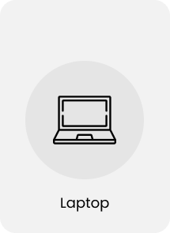

Laptop
A laptop, laptop computer, or notebook computer is a small, portable personal computer (PC) with
a
screen and alphanumeric keyboard. These typically have a "clamshell" form factor, typically
having
the screen mounted on the inside of the upper lid and the keyboard on the inside of the lower
lid,
although 2-in-1 PCs with a detachable keyboard are often marketed as laptops or as having a
"laptop
mode." Laptops are folded shut for transportation, and thus are suitable for mobile use. Its
name
comes from lap, as it was deemed practical to be placed on a person's lap when being used.
Today,
laptops are the used in a variety of settings, such as at work, in education, for playing games,
web
browsing, for personal multimedia, and general home computer use.
As of 2021, in American English, the terms laptop computer and notebook computer are used
interchangeably in other dialects of English one or the other may be preferred. The term
'notebook computers' or 'notebooks' originally referred to a specific size of laptop (originally
smaller and lighter than mainstream laptops of the time), the terms have come to mean the same
thing and notebook no longer refers to any specific size.
Laptops combine all the input/output components and capabilities of a desktop computer, including
the display screen, small speakers, a keyboard, data storage device, sometimes an optical disc
drive, pointing devices (such as a touchpad or pointing stick), with an operating system, a
processor and memory into a single unit. Most modern laptops feature integrated webcams and built-in
microphones, while many also have touchscreens. Laptops can be powered either from an internal
battery or by an external power supply from an AC adapter. Hardware specifications, such as the
processor speed and memory capacity, significantly vary between different types, models and price
points.
Design elements, form factor and construction can also vary significantly between models depending
on intended use. Examples of specialized models of laptops include rugged notebooks for use in
construction or military applications, as well as low production cost laptops such as those from the
One Laptop per Child (OLPC) organization, which incorporate features like solar charging and
semi-flexible components not found on most laptop computers. Portable computers, which later
developed into modern laptops, were originally considered to be a small niche market, mostly for
specialized field applications, such as in the military, for accountants, or for traveling sales
representatives. As the portable computers evolved into the modern laptop, they became widely used
for a variety of purposes.